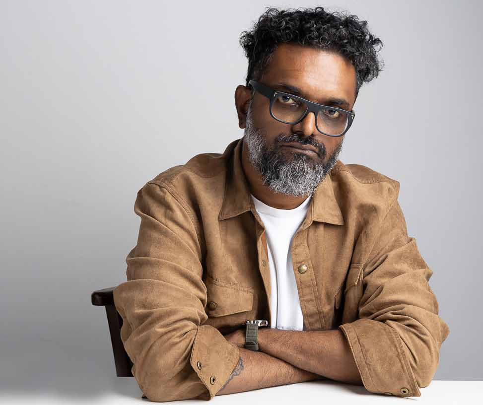
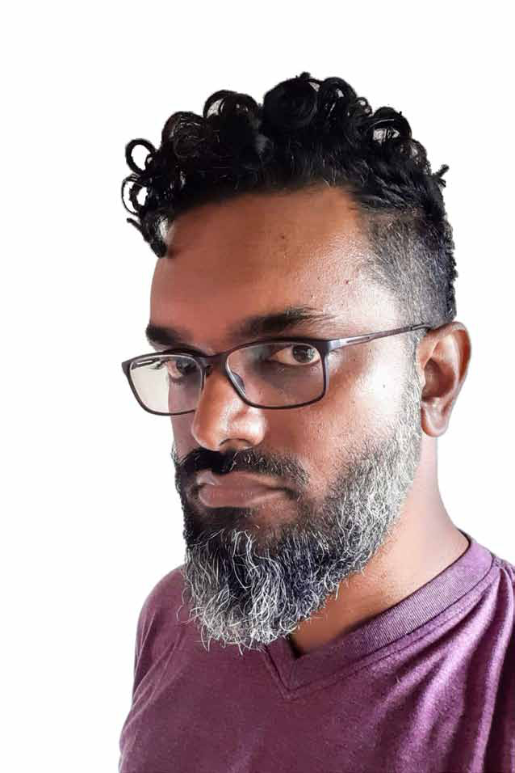
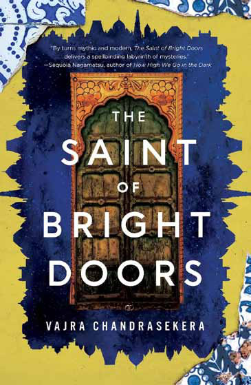
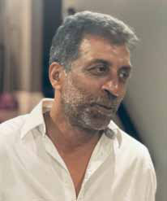

Fantastical Literature Is the Original Form of Storytelling — Literary Realism Is a 19th-Century Innovation"
Fantastical Literature Is the Original Form of Storytelling — Literary Realism Is a 19th-Century Innovation"
Jaffna Monitor hellojaffnamonitor@gmail.com 7 Fantastical Literature Is the Original Form of Storytelling — Literary Realism Is a 19th-Century Innovation" INTERVIEW BY: Our Special Correspondent Exclusive Interview with Vajra Chandrasekera V ajra Chandrasekera is a Colombo-born writer who has risen to the pinnacle of speculative fiction, his name now synonymous with imaginative storytelling that transcends boundaries. His debut novel, The Saint of Bright Doors, is a genre- defying masterpiece that has captivated readers, critics, and award juries worldwide, earning him prestigious accolades, including the Nebula and Crawford Awards. It transports readers to worlds where the ordinary and the extraordinary collide in a symphony of the surreal. In this exclusive interview with Jaffna Monitor,


Jaffna Monitor hellojaffnamonitor@gmail.com 8 we journey into the heart of Vajra Chandrasekera's creative universe—exploring the genesis of his ideas, the inspirations that fuel his imagination, and his perspectives on the ever-evolving literary landscape. Join us as we step into the mind of a writer who dares to dream beyond the confines of reality. Your short story, The Translator, at Low Tide was recently translated and published in the Tamil literary magazine Kaalachuvadu. Could you share your thoughts on having your work translated and reaching Tamil- speaking audiences? I’m absolutely delighted to have the story translated! Translation itself is a creative art form and, in a way, a magical act. Having done enough of it myself, I understand just how subtle and complex the process can be. It’s difficult to fully grasp how a story reads in a language you are not fluent in or well- versed with, as you may not be familiar with its literary history or the context in which the story will be received. Trusting the translators, along with the editors and publishers who bring the work to new readers, is an essential part of that process. I deeply appreciate the dedication and effort of all the translators who have worked on my books and short stories over the past decade. Nearly all of these translations have been into European languages. This, however, is the first time my work has been translated into a South Asian language, making it both a new and deeply gratifying experience. Your father was a writer, and you were involved in the publishing process from a young age. How did these experiences shape your journey as a writer? In one sense, quite a lot—I gained an early understanding of the work involved from a writer’s perspective, including the effort required to draft, edit, revise, and proofread. I also picked up some technical insights, such as hearing my father talk about how he approached dialogue, description, and other aspects of writing. But from the perspective of commercial publishing, my father’s experience was entirely with local and regional small presses in the final decades of the previous century—a world that now feels almost like another planet. Knowing something about that didn’t prepare me at all for the far more complex experience of working with Western publishers in the present decade. Those things, I could only learn by doing. Your novel The Saint of Bright Doors has received major accolades, including the 2023 Nebula Award, the 2024 Crawford Award, and the Locus Award for Best First Novel. It was also a finalist for the 2024 Hugo Award. What do these honors mean to you as a writer, and have they influenced your approach to future projects? They were all quite unexpected and deeply validating. I didn’t expect the book to make waves—most books don’t! I’m very happy for what the awards mean in terms of recognition, since these include both juried and popular awards. The award wins and nominations have significantly raised my profile as a debut author, and I believe have contributed to getting the book in front of more people in many practical ways: more
Jaffna Monitor
hellojaffnamonitor@gmail.com
9
bookshops and libraries stocking copies, more
publishers around the world making offers on
translations, more book clubs, more media.
All of this is wonderful, and far more than I
expected. Luck plays a disproportionately huge
role in a writer’s career, and I’ve been very
lucky.
Traditionally, Sri Lankan writers have
predominantly explored current or
historical themes in their stories
and novels, with science fiction
being a rare genre within the literary
landscape. What inspired you to take
this unconventional path and write
science fiction? Was there a specific
moment, influence, or realization that
led you to embrace this genre?
I don’t think of it as a particularly
unconventional path. Quite a few writers
from Sri Lanka (both living on the island and
from the diaspora) have published speculative
fiction in a variety of styles and spaces over
the last twenty years: I made a list of some of
these writers on my blog the year Saint came
out. There are many more in South Asia in
general, and around the world. Speculative and
fantastical literatures are quite popular among
both readers and writers. More technically,
I prefer fantastical to naturalistic registers
because it makes it possible to create a much
more layered symbolic space. To me, strict
realism is the exception. It can be a fruitful set
of formal constraints, and certainly it remains
the culturally highest-prestige form, but then
again, the times are certainly changing: look
at all the recent Booker winners that were
in some way speculative fiction, including
Shehan Karunatilaka with a ghost detective
story.
What is your outlook for science
fiction in Sri Lanka? Do you perceive
a growing interest in the genre,
particularly among the younger
generations?
I don’t really know. I’ve never published here
and have very little insight into the local
industry or readership—most of my readers
are elsewhere. In general, I’d guess that, like
everywhere else, traditional science fiction,
especially space opera, might feel somewhat
old-fashioned to younger readers, much like
epic fantasy, since these genres have been
mainstream for the past forty years. I think
their core readership now skews older on a
global scale.
My vague impression from the last Colombo
Book Fair was that romantasy and shonen
manga are just as popular here as anywhere
else, alongside prestige literary fiction,
including literary-speculative authors like
Atwood and Ishiguro. These seem to be
the most sought-after foreign fiction titles.
Otherwise, the selection of modern speculative
fiction across subgenres appears quite thin
on local shelves, likely due to low demand.
Whether that reflects an actual lack of interest
or simply the fact that readers are opting for
ebooks instead is hard to say.
How do you view science fiction as
a platform for exploring themes or
ideas that might be difficult to address
within the confines of more traditional
narratives? In what ways do you
think the speculative nature of the
genre allows for a deeper or broader
engagement with complex social,
Jaffna Monitor hellojaffnamonitor@gmail.com 10 cultural, or philosophical issues? I don’t think it does. I think any theme can be addressed in any form or genre. It’s just that each writer and reader will find different approaches more pleasurable or interesting. Strict naturalism is a powerful technique, obviously, and has given us a wide range of social and political novels that have a great deal to say. Speculation is also a powerful technique, and in many ways an easier and more traditional one, if you think of it as drawing from allegory and satire more than design fiction. I think it appeals more to readers and writers who enjoy a greater degree of ontological freedom in their fictive dream. In strict naturalism, a door is literally a door and perhaps symbolically also a door. In the fantastic, the door’s symbolic meaning can become real, which allows for the possibility of second- order speculative consequences: what could be on the other side of a door that can never be opened? Speculative fiction also increases the range of a kind of indirect political fiction, similar to the methods of the misty poets in China or the magic realists of South America. The difference is of technique, and therefore a matter of preference. How much of your personal experiences or cultural background influences the worlds and characters you create? Are there elements from Sri Lankan history or mythology that you consciously integrate into your speculative fiction? Yes, of course! My books are full of Sri Lankan and South Asian references, historical, mythic, and personal, to the point where western readers often say (and only some of them mean this as a complaint) that they have to look things up to understand them. In Rakesfall I make fairly direct connections to Sri Lankan folk tales and histories, as well as the Ramayana, and the Kathasaritsaga. In The Saint of Bright Doors I retell a version of the story of Prince Vijaya’s arrival on the island. I do this sort of thing so much I can’t even remember all the allusions I’ve included: I enjoy

Jaffna Monitor hellojaffnamonitor@gmail.com 11 stories that make reference to other stories nearly as much as I enjoy stories within stories. While you primarily write in English, what is your perspective on science fiction in local languages? I think it’s a great thing, and I wish there were more of it—along with greater coverage. A thriving literary culture in any language should encompass many forms and genres, including fantastical literatures. I know there are science fiction novels in Sinhala, though they seem relatively rare. I’d assume the same is true for Tamil in Sri Lanka, though there’s certainly more activity in India on that front. One upcoming anthology I’m particularly excited about is The Blaft Book of Anti-Caste Science Fiction from Blaft Publications in Chennai, which features speculative fiction in English translation from Tamil, Telugu, Malayalam, and other languages. I wish all our regional publishing industries, especially small presses, had more support and funding to publish and translate such works. The Blaft anthology was crowdfunded online, which might offer a viable path forward for similar projects. Interestingly, the publisher recently noted that a significant number of orders came from outside India—an encouraging sign of growing international interest in these literatures. On a global scale, how have the science fiction and speculative fiction genres evolved over time? What significant trends or shifts have you observed, and how do they resonate with your own work? It’s a long history, regardless on whether you begin from the Epic of Gilgamesh or from Frankenstein—personally, I like to begin from Lucian of Samosata’s A True Story, but it doesn’t matter: this kind of story has been a part of literature for as long as literature itself has existed. I would argue that fantastical literatures are the standard and original form of the story: literary realism is the real nineteenth-century innovation, and has in turn spurred new kinds of fantastical literature using its toolkit. There have been some big shifts in publishing over the 20th century as the industry itself evolved, and there are definitely many smaller movements and trends, but I think ultimately they don’t matter so much. Many of the year- on-year trends are driven by marketing, in any case, and represent not much more than publishers attempting to reproduce recent successes by producing more of the same. This works to a limited extent and then they move on to something else. For writers, I think it’s important to disengage from these cycles when writing. Even from a purely commercial standpoint, because given the extended timelines to finish a work, sell it, and then have it arrive in bookstores, you usually can’t even catch a commercial trend that’s already happening. On the plus side, it also means that for the most part you can just ignore the short- term trends and write what you want to. The biggest changes in recent decades, I think, have been that first, modern novelistic fantastic literature is nowadays allowed much more freely into prestige cultural spaces (like the Booker, as I mentioned earlier) and these genre lines are much blurrier than they used to be, and that’s a good thing in both directions. Secondly, also as I spoke of earlier: especially over the last twenty years, there has been a distinct shift toward a more international field as the internet democratized access to
Jaffna Monitor hellojaffnamonitor@gmail.com 12 publishing. While the industry continues to have many problems, we can at least say that publishing is much less limited by location than it used to be. I think I’ve benefited from both of those changes, and I’m hopeful that they mean new opportunities for many more writers. In a previous interview, you mentioned that as you grew older, your parents encouraged you to pursue what they considered “acceptable” careers—such as becoming a doctor, lawyer, or engineer. With the creative economy evolving in recent years, do you feel it has become more feasible for writers to pursue their craft as a sole profession while achieving financial stability? Moreover, does the mindset of parents encouraging traditional career paths still persist, and how do you think it impacts the creative aspirations and career choices of younger generations? I think that mindset is an understandable intergenerational disconnect under modernity. Technological and social change is constant and ever more volatile, and it’s much easier to take career risks for yourself than it is to watch your loved ones do it, especially if you feel responsible for their future well-being. One consequence of accelerating neoliberalism is that all jobs are worse than they used to be. You get paid less, relative to cost of living, and you have less job security, if any at all. Creative work is no exception: it’s precarious, often exploitative, and extremely unpredictable. I would definitely say that writing is not a good line of work if you want financial stability. Some other kind of paying work is still quite necessary if you want to pursue any kind of artistic career. My only modification to my parents’ advice would be to think in terms of freelance or contract work where you get to set your own hours, rather than working toward the kind of full-time job which will demand all your energy and time. But even that modification is really just a reflection of the changing nature of work in general. Personally, my main side gig was freelance editing, mostly in nonfiction. That said, I do think this is a particularly good moment for writers who live in the third world, because first-world publishing is far more accessible to us now than it has ever been, as the industry has very slowly adapted to the internet. All the information you need is online, you can email manuscripts, sign

Jaffna Monitor hellojaffnamonitor@gmail.com 13 contracts digitally, attend virtual events, talk to writers, translators, and people in the industry on social media—you no longer need to have physical access to major centres of western publishing like New York or London to be able to get an agent or get your work in front of an editor; you don’t need to go to conferences or conventions on the other side of the world to meet people who can help you; you don’t even need to spend money on postage to send your manuscripts out. It’s not surprising to see the sharp increase in books written by writers from South Asia coming out in the US and UK markets now. Even a decade ago that was much rarer. I hope to see a lot more writers from this part of the world taking advantage of these opportunities in every genre. What opportunities and challenges do you think artificial intelligence (AI) presents for writers, particularly those working in the science fiction genre? Do you see the potential for leveraging AI responsibly in the creative process, and if so, how might that manifest in practice? Furthermore, some technology experts predict that AI could eventually write as effectively as human writers. Do you agree with this perspective, and how do you envision it shaping the future of writing and storytelling? I am strongly opposed to AI in any way connected to creative work. (I’m also opposed to AI in general, as I think it is an execrable technology that will only introduce and compound error wherever it is used, but I am more resigned to this as part of silicon neoliberalism’s natural enshittification.) Writing fiction is a very long sequence of decisions, some minor, some complex. AI- generated text represents the abandonment of all those decisions in exchange for a statistical smear that unthinkingly approximates the combined product of many such past decisions by many other people with wildly different concerns. It is an abdication of responsibility as an artist: why should anyone care to read something that you didn’t care to write? The “product” may look the same at a distant, superficial glance. You can paint a brick to look like a cake. But it will not feed you when you are hungry. I understand the appeal of AI to people who romanticize the idea of being a writer, as a social role (or a visual artist, or a musician)— people who believe that there is prestige or cultural cachet or money or something desirable about it other than the act of writing itself. They don’t want to write but they want to be a writer, and to this end they persuade themselves that the writing itself is unnecessary. Like a middle manager who gives instructions to other people to do the work and then takes credit for what they produce. But ultimately the benefit accrues only to the upper management boss they don’t even acknowledge: the companies that own the AI technology, who will use all that data to train the AI and make it more profitable. The danger of AI is not in science-fictional apocalypses of the robots taking over. (If such a thing is possible, it’s certainly not going to happen because we have a glorified autocomplete.) The danger is that this is a new weapon that employers can use to make work more precarious in many different fields. It gives them the means to fire more people and rehire them as contractors on worse terms to “fix” the AI’s output. This turns more full- time jobs into contract jobs and drives down
Jaffna Monitor hellojaffnamonitor@gmail.com 14 freelance rates. It generates profit for people at the other end of this value-extraction chain, by making it much harder for a wide variety of white-collar workers (not only in the creative fields) to have stable work for decent pay. Specifically in the creative fields, an additional danger is that it will significantly damage the ecosystem of small gigs and side projects that many fledgeling artists use both as additional sources of revenue as well as an arena in which to practice and improve their skills. Many a writer has survived on copywriting gigs, many a visual artist makes posters and graphics to get by, and so on. In the process you practice your skills at basic levels, learn your tools, some essential secondary skills— from meeting a deadline to chasing a payment. The world already strongly disincentivizes people from becoming artists. The real AI apocalypse is that we could lose a generation of potential artists and gain a generation of smug, illiterate dipshits in their place. There are additional dangers and concerns with AI (environmental damage to both the earth and the internet, for instance), but this is probably already my longest response, so I’ll stop here. My advice to writers in any genre is to treat AI as the revolting slop bucket it is, and to do your work the same way writers in every language and under every imaginable circumstance have done for thousands of years: by writing, one line at a time. Your novels, The Saint of Bright Doors and Rakesfall, delve into profound themes of reincarnation and struggles for liberation. What draws you to these recurring themes, and how do they reflect your perspectives on identity and societal structures? In what ways do you believe the speculative fiction genre uniquely facilitates the exploration of such multifaceted ideas? I don’t think speculative fiction has a greater grasp of these things than any other form or genre, but I do—as a writer and as a reader myself—appreciate the particular tactility and purchase that the techniques of speculative fiction provide on their grippable surfaces. Though a great deal of ostensibly realist fiction also often makes space for irreal, symbolic irruption. Few stories are altogether straight. I think
Jaffna Monitor hellojaffnamonitor@gmail.com 15 it’s more useful to think of genre as a set of traditions and some loose guidelines rather than something that has strict boundaries. And I’ve lived in Sri Lanka all my life, with an altogether too close-up view of Sinhala Buddhist supremacist culture, so it will probably always be impossible for me to write a book that doesn’t talk in some way about power as I’ve understood it—the violence of empires and states through genocide, apartheid, and ideology. You have also published occasional poems alongside your fiction. How do you perceive the role of poetry in your body of work? Does it serve a different purpose or occupy a unique creative space compared to your fiction? I consider poetry in many ways the fundamental creative form in language, in the way that mathematics underlies physics but is also its own discipline. All prose derives from the poetic act: every word was once, and secretly still is, a poem. I don’t write a lot of poetry qua poetry—I find it more difficult— or think of myself as a poet, but I do believe that one of the great pleasures of prose is in this revelation of obscured beauties, of secret rhythms. What can your readers look forward to in your upcoming works? Are there specific themes or genres you are eager to explore further, or perhaps new creative directions that you’re considering venturing into? I’m working on a novel that I hope to have out soon (no earlier than ’26), that will be formally and thematically similar to my first two books. Broadly, I work freely with the various elements of “speculative fiction”—science fiction, fantasy, horror, and the weird—and integrate them with writing about place, culture, and history in a Sri Lankan and South Asian context. This is my project for at least a few more books to come, so I want to do more of it as well as do more with it. Oh, and I also hope to publish a collection of my short stories soon; they do tend to get overshadowed by the novels, and I think it would be nice to have a selection in book form that will hopefully reach a few more readers. Your command of English is remarkable, and it reflects beautifully in your writing. Could you share how you developed such proficiency? Was your education primarily in English, or did you learn and refine the language on your own? Additionally, what advice would you offer to younger generations aspiring to master English, particularly those who wish to use it as a medium for creative expression and storytelling? Are there specific practices or resources you recommend? Thank you! That’s very kind of you to say. No, my formal education was entirely in Sinhala. I went to a government school in Colombo and stopped my education after my A/Ls, at which I did not score particularly well. My parents sent me to English classes at a young age, and were themselves fluent (though my father was not necessarily comfortable in it.) But most of all, there were a lot of English books at home. Some came from book fairs and second-hand bookshops; some came from
Jaffna Monitor hellojaffnamonitor@gmail.com 16 boxes of books inherited from dead relatives with eccentric taste. And of course, libraries. I progressed on my own from children’s books to adult novels, and my love of speculative fiction probably helped nudge me toward English novels quite early. For example, I read Arthur C. Clarke for the first time in Sinhala translation, but I realised that if I wanted to read his other books, other classic writers of that period, or any newer writers at all, they were only available in English. And of course, as a historical consequence, there is just so much more fiction available in English, in every genre, including translations from other languages. So my advice is primarily just to read as much as you can, and as widely as you can. Most people read at best a handful of books every year. A writer—at least, one who wants to get good at it—should be reading at least several dozen. There is no upper limit to reading except those imposed by time and money, but practically speaking, there is definitely a lower limit. A specific practice I’d recommend for writers of short fiction in English—and I do think every beginning writer of prose fiction should at least try their hand at the short story, even if you see yourself primarily as a novelist—is to actively send your work to magazines from the very beginning. You will get a lot of rejections, but that’s normal. It’s not personal: every writer collects hundreds of these. It just means that you’re a working writer. The rules of the game are simple: keep writing new stories (do not endlessly “polish” the last thing you wrote) and keep sending those stories out for publication (do not give up on a story unless its rejections are at least in the low double digits.) Below are a few free resources that track opportunities for publication. Each will have their own submission guidelines, so be sure to read those and make sure you’re giving them exactly what they ask for. Note: avoid anything that has a submission fee. You, the writer, should not be spending any money to get published, and there are a lot of scams out there. Links you find from the databases below should be generally reliable. 1. https://manager.submittable.com/opportunities/di scover?fee=false&page=1&tags=short-story 2. https://www.pw.org/literary_magazines 3. https://thegrinder.diabolicalplots.com/ The final part of LTTE co- founder Ragavan’s exclusive interview will be featured in the next issue. Stay tuned for insights and untold perspectives! Upcoming in Jaffna Monitor
